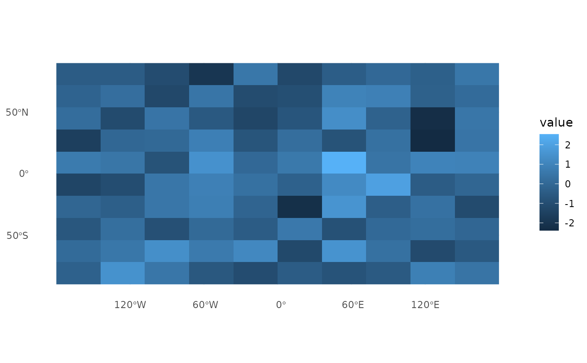
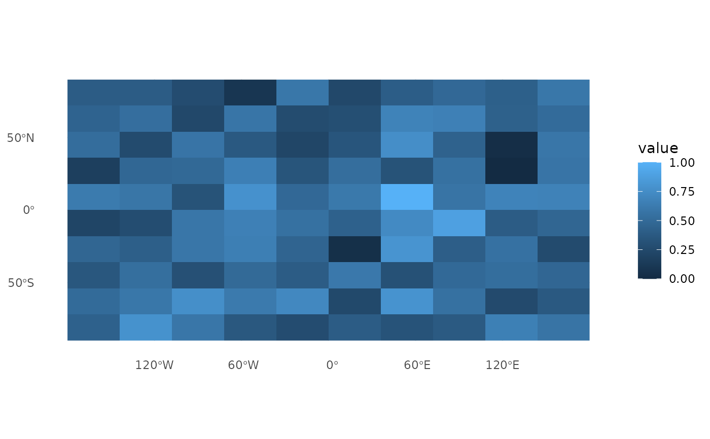

Scales the values of a SpatRaster (from the terra package), Raster*
(from the raster package), or a raster file loaded via terra::rast() to a
range between 0 and 1.
Arguments
- raster
A
SpatRaster,RasterLayer,RasterStack,RasterBrickobject, or a character string specifying the path to a raster file that can be loaded withterra::rast()(e.g., GeoTIFF, NetCDF).
Note
This function accepts a SpatRaster, Raster* object, or a file path.
Raster* objects are coerced to SpatRaster using terra::rast(), and
file paths are loaded as SpatRaster. It calculates the minimum and
maximum values and scales all values between 0 and 1.
Examples
ecokit::load_packages(terra, raster, fs, ggplot2, tidyterra)
# Setup temporary directory
temp_dir <- fs::path_temp("scale_0_1")
fs::dir_create(temp_dir)
# Example with SpatRaster
r <- terra::rast(ncols = 10, nrows = 10)
terra::values(r) <- rnorm(terra::ncell(r))
r_scaled <- scale_0_1(r)
c(r, r_scaled)
#> class : SpatRaster
#> size : 10, 10, 2 (nrow, ncol, nlyr)
#> resolution : 36, 18 (x, y)
#> extent : -180, 180, -90, 90 (xmin, xmax, ymin, ymax)
#> coord. ref. : lon/lat WGS 84 (CRS84) (OGC:CRS84)
#> sources : memory
#> spat_24656a7cd24c_9317_VuY9VpSXXzR4qRb.tif
#> names : lyr.1, lyr.1
#> min values : -2.557662, 0
#> max values : 3.463461, 1
# Example with RasterLayer
r_raster <- raster::raster(ncol = 10, nrow = 10)
raster::values(r_raster) <- rnorm(raster::ncell(r_raster))
r_raster_scaled <- scale_0_1(r_raster)
c(r_raster, r_raster_scaled)
#> [[1]]
#> class : RasterLayer
#> dimensions : 10, 10, 100 (nrow, ncol, ncell)
#> resolution : 36, 18 (x, y)
#> extent : -180, 180, -90, 90 (xmin, xmax, ymin, ymax)
#> crs : +proj=longlat +datum=WGS84 +no_defs
#> source : memory
#> names : layer
#> values : -1.751594, 1.950413 (min, max)
#>
#>
#> [[2]]
#> class : SpatRaster
#> size : 10, 10, 1 (nrow, ncol, nlyr)
#> resolution : 36, 18 (x, y)
#> extent : -180, 180, -90, 90 (xmin, xmax, ymin, ymax)
#> coord. ref. : lon/lat WGS 84 (EPSG:4326)
#> source : spat_24654a931ba8_9317_6Uxy02myoMrg5LO.tif
#> name : lyr.1
#> min value : 0
#> max value : 1
#>
# Example with file path
r_file <- fs::path(temp_dir, "raster.tif")
terra::writeRaster(r, r_file, overwrite = TRUE)
r_file_scaled <- scale_0_1(r_file)
c(terra::rast(r_file), r_file_scaled)
#> class : SpatRaster
#> size : 10, 10, 2 (nrow, ncol, nlyr)
#> resolution : 36, 18 (x, y)
#> extent : -180, 180, -90, 90 (xmin, xmax, ymin, ymax)
#> coord. ref. : lon/lat WGS 84 (EPSG:4326)
#> sources : raster.tif
#> spat_246548956751_9317_rG2neQku8ByG59H.tif
#> names : lyr.1, lyr.1
#> min values : -2.557662, 0
#> max values : 3.463461, 1
# Visualize results
ggplot2::ggplot() +
tidyterra::geom_spatraster(data = r, maxcell = Inf) +
ggplot2::theme_minimal()

ggplot2::ggplot() +
tidyterra::geom_spatraster(data = r_scaled, maxcell = Inf) +
ggplot2::theme_minimal()

# clean up
fs::dir_delete(temp_dir)